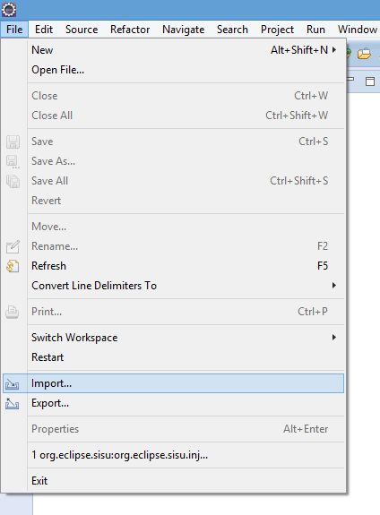
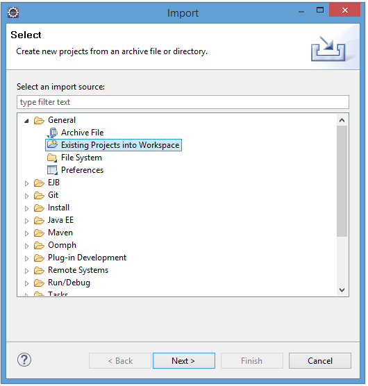
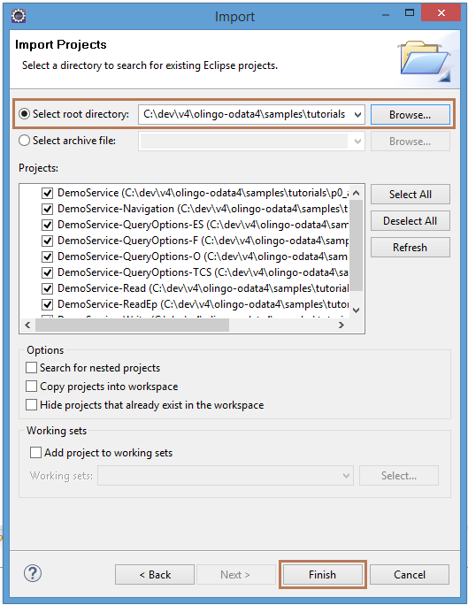

Prerequisites for Apache Olingo Tutorials¶
Build Environment¶
We assume you are familiar with Maven and Git and have installed at least the following versions:
- Maven Version 3.2.0
- Git Version 3.5.1
- JDK Version 1.6
The tutorials are tested and work with this versions.
Tutorial sources¶
To get the source code of the tutorials, please perform the follwing steps:
-
Clone the project git repository
> git clone https://gitbox.apache.org/repos/asf/olingo-odata4
-
Checkout the tag 4.6.0
> git checkout tags/4.6.0
-
Navigate to the tutorial project
You can find each tutorial in a separate subdirectory. e.g. p1_read> cd samples/tutorials
-
Build the Project and Eclipse Project Note: The tutorials projects won`t be created if you build the Olingo library project. To create them, you have to navigate to the sub directory mentioned above.
> mvn clean install
Eclipse support (optional)¶
- Create Eclipse projects
*\> mvn eclipse:clean eclipse:eclipse*
- Import projects in Eclipse
Open Eclipse and navigate to File -> Import

Select General -> Existing Projects into Workspace

Select the directory of the tutorials and click Finish

Copyright © 2013-2022, The Apache Software Foundation
Apache Olingo, Olingo, Apache, the Apache feather, and
the Apache Olingo project logo are trademarks of the Apache Software
Foundation.